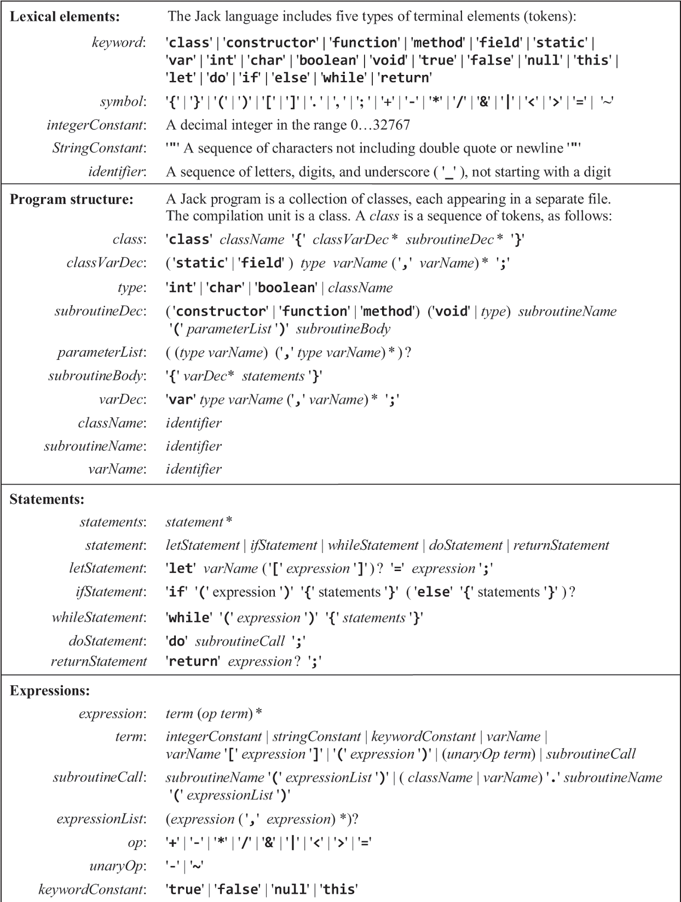

计算机系统要素学习笔记 Part3——编译器和代码生成
这次的学习目标是完成 Jack 语言到虚拟机指令的编译器，它包含两个步骤——代码解析和代码生成。代码解析包含两个步骤——词法分析和语法分析，最终会生成 AST 供代码生成。本想把 OS 也给解决掉，但其和前面缺少很多联系，不想做了，就此别过。接下来学习一些计算理论，然后是 CS61C。
代码解析
Jack 语言的语法分析特别简单——只有单字符的运算符且没有优先级；[]和.不作为运算符处理（因此不能定义二维数组和嵌套类……这究竟是会带来方便还是带来麻烦我不好说）；变量、字段定义必须放到最前；赋值操作是语句而非运算符；赋值语句和过程调用语句都有关键字做前缀；甚至构造函数还得把返回值类型写上去……我是说，实现这么个玩意没有半点意思。但终究是得写，作为下一章的铺垫。考虑到它运算符没有优先级，以及[]和.的特殊处理，不使用 pratt 法，直接用递归下降法处理是最方便的。
实现的时候考虑还是生成 AST，XML 生成通过 visitor 模式去另外实现，不然后面代码生成的时候又去读 XML 那就难受了，会造成额外的复杂度。

做的时候考虑还是按照它要求的 API 去做，不然后面生成 XML 或许需要做很多额外工作……这里实现的时候使用 ADT 为 Expr 和 Stmt 建模。由于 Rust ADT 的限制，无法对树的成员做更多限制，这导致需要一个额外的步骤去校验代码是否合法——比如在当前实现中 do 接受的是一个任意表达式，需要后续去检查其是否真的是过程调用。后续解析的时候也需要一些丑陋的“unwrap”操作。如果是用 Haskell 来写的话就无此问题了……
顺便我翻了个错误，对 AST 忘记去给它记录 Token 元信息了（开始意识到 CI 那本书为何在 AST 中仍旧保存着 Token）……这后面在进行语义分析的时候如果出了错就没法给出出错的位置了……
把.当作操作符似乎是个坏决定，.应当和过程调用以及数组索引绑在一起。
代码生成
最酷的地方来啦——把 AST 翻译成 VM 代码！该功能本质上仍旧是一个 tree visitor——因此这过程同样是递归的，即使是生成“扁平”的结果。但需要处理的事情一箩筐：
- 语义分析（不存在的！），保证参数类型和数量对的上，右值和左值类型对的上……
- 变量和符号表：类，实例的字段（实例存在堆上哟）和函数的本地变量，需要记录元信息并做符号表
- 控制流
- 内存分配：为变量分配相应内存空间
- 堆内存的访问，垃圾回收……
这玩意比想象中还 trival……丧失热情了，因此仅完成功能就当完工，error free 了。
关于变量
使用符号表去处理变量。对每个 jack 文件，只需要两类符号表——类符号表和函数符号表。
符号表中的变量有四个字段：
- 名称
- 类型
- 型别（field，static，local，argument），型别决定作用域
- 索引，按出现顺序做索引，比如第一个 field 为
field 0，第二个 field 为field 1，第一个 static 为static 0。
注意 method 中需要隐式地把 this 作为第一个字段。
关于表达式
栈式虚拟机生成表达式对应的指令非常简单，几乎比使用栈进行四则运算还简单（那个是边解析边算的，和 pratt 是同一种操作，这个甚至更简单，AST 已经得到了；既然顺序的栈能够计算任意复杂表达式，那顺序的指令亦然）——对任何操作符，先把它的各操作数入栈，再进行计算操作即可，这里“把它的各操作数入栈”，同样是生成表达式指令的操作。对任意一个操作符，要生成它对应的虚拟机指令，其前提只需要它的操作数已入栈即可，无论这操作符是多么复杂。
视频（或许和书籍）中要求的处理方法无视优先级，直接把表达式当成一个扁平的 token 序列，这样操作我不太喜欢（其实 one-pass 也是能引入优先级的嘛！），还好我不用写作业，可以按照自己的来。
关于控制流
控制流，和处理表达式类似——我处理一种语句时，我不需要考虑它的各个“操作数”究竟具体是什么玩意，我只需要把它们对应的指令序列搞到，然后做我自己的逻辑就行了，比如 while 语句：
1 | |
可能是生成这样的指令序列：
1 | |
if-else 也如此，且其不需要考虑 else-if 的情况——这问题已经自动地解决了。
关于对象和数组
对象和数组的实际数据存储在堆上（2048-16384）。对于对象，在栈中，只保存对它的指针（当然，编译时要记录类型信息以在 call 时确定它指向的 function），调用它的方法时将该指针传递给相应 function，然后把该参数设置到 THIS。
注意 Jack 语言中不允许访问类的字段……这样设计是为了不同 class 能分开编译，因为要访问类的字段就必须知晓其内存布局，在编译上有依赖。JVM 无此问题（但仍旧要依赖其去编译），因为 JVM 的字段名也是直接存储在字节码中的，而这里的虚拟机语言没有此信息。
解析类定义时，对于构造函数的定义，在其业务前需要预先在堆上把字段的空间给分配好再执行操作。但对于调用者来说，构造函数和普通函数无差别。
如何分配空间？使用最后一章实现的Memory.alloc函数，其接受参数是需要多少个字的空间，然后返回一个指针指向该空间。
数组通过Array.new函数去创建，通过[]去访问。
注意在方法中，this 是第一个参数，在构造器中，this 是pointer 0，以及function(...)等价于this.method(...)。
总结
代码生成这部分实际上是非常简单的，这是故意如此设计的，使其实现简单，且每个 jack 文件能完全分开去编译；具体说来有几个原因：
- 没有真正的类型系统，变量定义时那些 int，char，boolean，没有任何意义（但 Array 和其他自定义的类型中这里还是有意义的，用来找到方法定义），同样，没有真正的语义分析，函数接受参数的数量，类型未进行过任何检验，函数是否未 return，是否 return 错误类型的值也无检查，没有 private 的字段……
- 没有动态分派——这是因为其中 Jack 中既没有函数指针也没有继承，一切函数调用在编译时都能确定被调用者
- 没有 continue 和 break 等控制语句，因为这些语句无法孤立处理——它们要向上找到所属的 while 语句并跳转到特定标签；但添加它们其实并非难事
- 没有异常，没有闭包，没有词法作用域……
lib OS
最后一个实验是操作系统，它本质上是一个库，用来供业务代码访问底层硬件。为此，需要使用 Jack 编写各种底层操作，比如数学运算，内存访问……这其实是数据结构课对吧 hh
Math
乘法
要利用加法实现乘法，第一个想法是显然的——
1 | |
这算法的时间复杂度是O(a)，这是极其离谱的。解决该问题也容易，能意识到，对于数字a，能通过一次加法得到2a，然后是4a，8a，16a……1，2，4，8，16，它们是 2 的幂，也是二进制中各位的数。
对于a * b，我们把 b 写做转换成二进制的形式，根据乘法的结合律，就能将其变为1a，2a，4a，8a等值的加法。比如：
1 | |
这便是乘法的稍微高速一点的实现，其中要求 a，b 大于等于 0：
1 | |
如果要考虑 a，b 存在负数的情况，可以预先确定好结果的正负性，然后将 a，b 均做个绝对值再操作。现在时间复杂度是O(log b)了。
除法
乏了。
本博客所有文章除特别声明外，均采用 CC BY-NC-SA 4.0 协议 ，转载请注明出处！